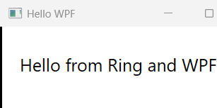
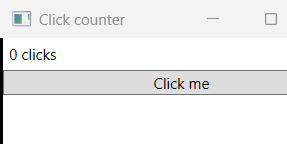
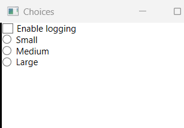
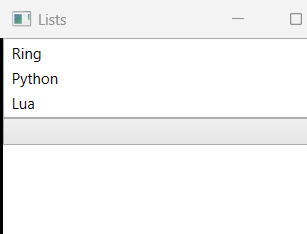
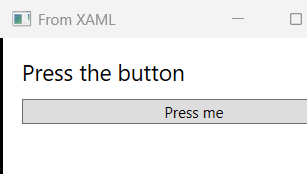
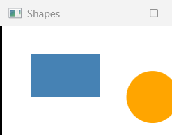
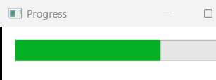

WPF samples
Ten short WPF samples — windows, panels, controls, XAML, data binding, shapes, menus and timers.
Run one with ring 06_xaml_window.ring from samples/Wpf; with --selftest it checks itself and closes. See the WPF guide for the concepts.

Hello window
The smallest WPF window
ring samples/Wpf/01_hello_window.ringSource code
# The smallest WPF window
load "../../libraries/dotnetlib/dotnetlib.ring"
dnUseDesktop()
dnImport("System.Windows")
dnImport("System.Windows.Controls")
dnImport("System.Windows.Controls.Primitives")
dnImport("System.Windows.Media")
dnImport("System.Windows.Shapes")
dnImport("System.Windows.Data")
dnImport("System.Windows.Threading")
dnImport("System")
oWindow = wpfWindow("Hello WPF",320,160)
oPanel = new StackPanel()
oWindow.Content = oPanel
oText = new TextBlock()
oText.Text = "Hello from Ring and WPF!"
oText.FontSize = 20
oText.Margin = new Thickness(20,30,20,0)
oPanel.Children.Add(oText)
wpfTest(oWindow,"dnAssert('title',oWindow.Title,'Hello WPF') dnAssert('text',oText.Text,'Hello from Ring and WPF!') dnAssert('size',oWindow.Width,320)")
wpfRun(oWindow)
wpfEnd()
Button click
A button counts its clicks (routed Click event)
ring samples/Wpf/02_button_click.ringSource code
# A button counts its clicks (routed Click event)
load "../../libraries/dotnetlib/dotnetlib.ring"
dnUseDesktop()
dnImport("System.Windows")
dnImport("System.Windows.Controls")
dnImport("System.Windows.Controls.Primitives")
dnImport("System.Windows.Media")
dnImport("System.Windows.Shapes")
dnImport("System.Windows.Data")
dnImport("System.Windows.Threading")
dnImport("System")
nClicks = 0
oWindow = wpfWindow("Click counter",300,150)
oPanel = new StackPanel()
oWindow.Content = oPanel
oInfo = wpfLabel("0 clicks")
oButton = wpfButton("Click me","clicked()")
oPanel.Children.Add(oInfo)
oPanel.Children.Add(oButton)
wpfTest(oWindow,"selfTest()")
wpfRun(oWindow)
wpfEnd()
# --------------------------------------------------------------------------
func clicked
nClicks++
oInfo.Content = "" + nClicks + " clicks"
func selfTest
oEvent = new RoutedEventArgs().New_1(new WpfButtonBase().ClickEvent)
oButton.RaiseEvent(oEvent)
oButton.RaiseEvent(oEvent)
dnAssert("two clicks",oInfo.Content,"2 clicks")
Binding slider
Data binding: the text follows the slider
ring samples/Wpf/03_binding_slider.ringSource code
# Data binding: the text follows the slider
load "../../libraries/dotnetlib/dotnetlib.ring"
dnUseDesktop()
dnImport("System.Windows")
dnImport("System.Windows.Controls")
dnImport("System.Windows.Controls.Primitives")
dnImport("System.Windows.Media")
dnImport("System.Windows.Shapes")
dnImport("System.Windows.Data")
dnImport("System.Windows.Threading")
dnImport("System")
oWindow = wpfWindow("Binding",320,150)
oPanel = new StackPanel()
oWindow.Content = oPanel
oSlider = new Slider()
oSlider.Maximum = 100
oSlider.Margin = new Thickness(10,10,10,10)
oText = new WpfTextBox()
oText.Margin = new Thickness(10,10,10,10)
oBinding = new WpfBinding().New_1("Value")
oBinding.Source = oSlider
oText.SetBinding(oText.TextProperty,oBinding)
oPanel.Children.Add(oSlider)
oPanel.Children.Add(oText)
wpfTest(oWindow,"oSlider.Value = 64 dnAssert('binding',oText.Text,'64')")
wpfRun(oWindow)
wpfEnd()
Checkbox radio
Check box and radio buttons with their events
ring samples/Wpf/04_checkbox_radio.ringSource code
# Check box and radio buttons with their events
load "../../libraries/dotnetlib/dotnetlib.ring"
dnUseDesktop()
dnImport("System.Windows")
dnImport("System.Windows.Controls")
dnImport("System.Windows.Controls.Primitives")
dnImport("System.Windows.Media")
dnImport("System.Windows.Shapes")
dnImport("System.Windows.Data")
dnImport("System.Windows.Threading")
dnImport("System")
cLog = ""
oWindow = wpfWindow("Choices",320,220)
oPanel = new StackPanel()
oWindow.Content = oPanel
oCheck = new WpfCheckBox()
oCheck.Content = "Enable logging"
oCheck.setCheckedEvent("cLog += 'on '")
oCheck.setUncheckedEvent("cLog += 'off '")
oPanel.Children.Add(oCheck)
aRadios = []
for cName in ["Small","Medium","Large"]
oRadio = new WpfRadioButton()
oRadio.Content = cName
oPanel.Children.Add(oRadio)
aRadios + oRadio
next
wpfTest(oWindow,"oCheck.IsChecked = 1 oCheck.IsChecked = 0 dnAssert('events',cLog,'on off ') aRadios[2].IsChecked = 1 aRadios[3].IsChecked = 1 dnAssert('exclusive',aRadios[2].IsChecked,0) dnAssert('selected',aRadios[3].IsChecked,1)")
wpfRun(oWindow)
wpfEnd()
List combo
A list box and a combo box with selection events
ring samples/Wpf/05_list_combo.ringSource code
# A list box and a combo box with selection events
load "../../libraries/dotnetlib/dotnetlib.ring"
dnUseDesktop()
dnImport("System.Windows")
dnImport("System.Windows.Controls")
dnImport("System.Windows.Controls.Primitives")
dnImport("System.Windows.Media")
dnImport("System.Windows.Shapes")
dnImport("System.Windows.Data")
dnImport("System.Windows.Threading")
dnImport("System")
cPicked = ""
oWindow = wpfWindow("Lists",320,240)
oPanel = new StackPanel()
oWindow.Content = oPanel
oList = new WpfListBox()
oCombo = new WpfComboBox()
for cName in ["Ring","Python","Lua"]
oList.Items.Add(cName)
oCombo.Items.Add(cName)
next
oList.setSelectionChangedEvent("cPicked = 'list:' + oList.SelectedItem")
oCombo.setSelectionChangedEvent("cPicked = 'combo:' + oCombo.SelectedItem")
oPanel.Children.Add(oList)
oPanel.Children.Add(oCombo)
wpfTest(oWindow,"oList.SelectedIndex = 1 dnAssert('list',cPicked,'list:Python') oCombo.SelectedIndex = 2 dnAssert('combo',cPicked,'combo:Lua') dnAssert('count',oList.Items.Count,3)")
wpfRun(oWindow)
wpfEnd()
Xaml window
A window described in XAML: parse it, find the named elements, handle events
ring samples/Wpf/06_xaml_window.ringSource code
# A window described in XAML: parse it, find the named elements, handle events
load "../../libraries/dotnetlib/dotnetlib.ring"
dnUseDesktop()
dnImport("System.Windows")
dnImport("System.Windows.Controls")
dnImport("System.Windows.Controls.Primitives")
dnImport("System.Windows.Media")
dnImport("System.Windows.Shapes")
dnImport("System.Windows.Data")
dnImport("System.Windows.Threading")
dnImport("System")
cXaml = '<Window xmlns="http://schemas.microsoft.com/winfx/2006/xaml/presentation" xmlns:x="http://schemas.microsoft.com/winfx/2006/xaml" Title="From XAML" Width="320" Height="180">'
cXaml += '<StackPanel Margin="15"><TextBlock x:Name="message" FontSize="18" Text="Press the button"/>'
cXaml += '<Button x:Name="press" Content="Press me" Margin="0,10,0,0"/></StackPanel></Window>'
oWindow = wpfXaml(cXaml)
oMessage = wpfFind(oWindow,"message")
oPress = wpfFind(oWindow,"press")
oPress.setClickEvent("oMessage.Text = 'The XAML button was pressed'")
wpfTest(oWindow,"selfTest()")
wpfRun(oWindow)
wpfEnd()
# --------------------------------------------------------------------------
func selfTest
dnAssert("title from XAML",oWindow.Title,"From XAML")
oEvent = new RoutedEventArgs().New_1(new WpfButtonBase().ClickEvent)
oPress.RaiseEvent(oEvent)
dnAssert("event handler",oMessage.Text,"The XAML button was pressed")
Shapes pixels
Shapes on a canvas, rendered to a bitmap to check the colors
ring samples/Wpf/07_shapes_pixels.ringSource code
# Shapes on a canvas, rendered to a bitmap to check the colors
load "../../libraries/dotnetlib/dotnetlib.ring"
dnUseDesktop()
dnImport("System.Windows")
dnImport("System.Windows.Controls")
dnImport("System.Windows.Controls.Primitives")
dnImport("System.Windows.Media")
dnImport("System.Windows.Shapes")
dnImport("System.Windows.Data")
dnImport("System.Windows.Threading")
dnImport("System")
dnImport("System.IO")
dnImport("System.Drawing")
dnImport("System.Windows.Media.Imaging")
oCanvas = new Canvas()
oCanvas.Width = 200
oCanvas.Height = 120
oCanvas.Background = wpfBrush("White")
oRect = new WpfRectangle()
oRect.Width = 80
oRect.Height = 50
oRect.Fill = wpfBrush("SteelBlue")
oCanvas.Children.Add(oRect)
oCanvas.SetLeft(oRect,10)
oCanvas.SetTop(oRect,10)
oCircle = new Ellipse()
oCircle.Width = 60
oCircle.Height = 60
oCircle.Fill = wpfBrush("Orange")
oCanvas.Children.Add(oCircle)
oCanvas.SetLeft(oCircle,120)
oCanvas.SetTop(oCircle,30)
oWindow = wpfWindow("Shapes",260,200)
oWindow.Content = oCanvas
wpfTest(oWindow,"selfTest()")
wpfRun(oWindow)
wpfEnd()
# --------------------------------------------------------------------------
func selfTest
dnAssert("rectangle",wpfPixel(oCanvas,200,120,40,30),"ff4682b4")
Grid layout
A grid with rows, columns and attached properties
ring samples/Wpf/08_grid_layout.ringSource code
# A grid with rows, columns and attached properties
load "../../libraries/dotnetlib/dotnetlib.ring"
dnUseDesktop()
dnImport("System.Windows")
dnImport("System.Windows.Controls")
dnImport("System.Windows.Controls.Primitives")
dnImport("System.Windows.Media")
dnImport("System.Windows.Shapes")
dnImport("System.Windows.Data")
dnImport("System.Windows.Threading")
dnImport("System")
oWindow = wpfWindow("Grid",360,200)
oGrid = new Grid()
oWindow.Content = oGrid
fillGrid()
wpfTest(oWindow,"selfTest()")
wpfRun(oWindow)
wpfEnd()
# --------------------------------------------------------------------------
func fillGrid
for nIndex = 1 to 3
oGrid.RowDefinitions.Add(new RowDefinition())
oGrid.ColumnDefinitions.Add(new ColumnDefinition())
next
for nRow = 0 to 2
for nColumn = 0 to 2
oCell = new TextBlock()
oCell.Text = "" + (nRow * 3 + nColumn + 1)
oCell.HorizontalAlignment = "Center"
oCell.VerticalAlignment = "Center"
oGrid.Children.Add(oCell)
oGrid.SetRow(oCell,nRow)
oGrid.SetColumn(oCell,nColumn)
next
next
func selfTest
dnAssert("9 cells",oGrid.Children.Count,9)
dnAssert("3 rows",oGrid.RowDefinitions.Count,3)
oFifth = oGrid.Children.Item(4)
dnAssert("attached row",oGrid.GetRow(oFifth),1)
dnAssert("attached column",oGrid.GetColumn(oFifth),1)
Timer progress
A DispatcherTimer fills a progress bar
ring samples/Wpf/10_timer_progress.ringSource code
# A DispatcherTimer fills a progress bar
load "../../libraries/dotnetlib/dotnetlib.ring"
dnUseDesktop()
dnImport("System.Windows")
dnImport("System.Windows.Controls")
dnImport("System.Windows.Controls.Primitives")
dnImport("System.Windows.Media")
dnImport("System.Windows.Shapes")
dnImport("System.Windows.Data")
dnImport("System.Windows.Threading")
dnImport("System")
dnImport("System.Diagnostics")
nPercent = 0
oWindow = wpfWindow("Progress",320,120)
oPanel = new StackPanel()
oWindow.Content = oPanel
oBar = new WpfProgressBar()
oBar.Height = 24
oBar.Margin = new Thickness(15,15,15,15)
oBar.Maximum = 100
oPanel.Children.Add(oBar)
oText = wpfLabel("0%")
oPanel.Children.Add(oText)
oTimer = new DispatcherTimer()
oTimer.Interval = new TimeSpan().FromMilliseconds(20)
oTimer.setTickEvent("advance()")
oTimer.Start()
wpfRun(oWindow)
dnAssert("filled",oBar.Value,100)
dnAssert("text",oText.Content,"Done")
wpfEnd()
# --------------------------------------------------------------------------
func advance
nPercent += 20
oBar.Value = nPercent
oText.Content = "" + nPercent + "%"
if nPercent >= 100
oTimer.Stop()
oText.Content = "Done"
oWindow.Close()
ok